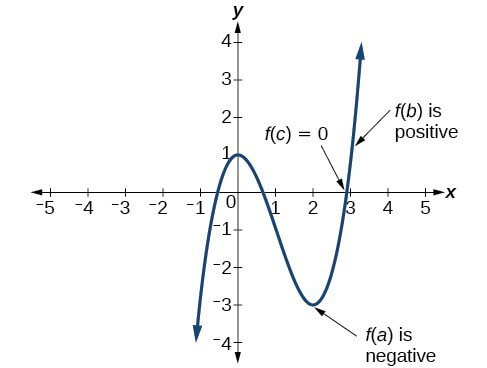
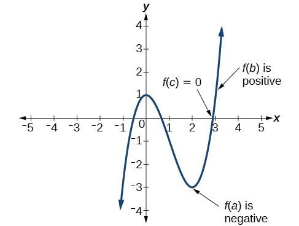
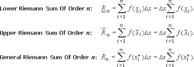
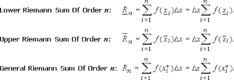
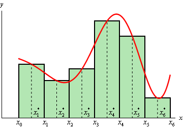
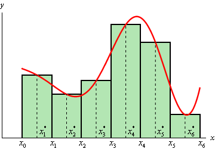

AP Calculus AB


Tangent Line Problem: It is quite tedious and difficult to find a tangent line
of a graph at a single point using Pre-Calculus. Depicted in the picture, one would have to
repeatedly create secant lines and find the slope until the distance between the 2 points used
decreases to near zero where the secant line begins to approach the tangent line. This idea of a
limit process where the distance on the x-axis between the 2 points approach zero is a fundamental
idea in Calculus.
As shown in the graph of x2 The secant line begins with points
(0,0) and (1,1). The next line y=0.5x moves the second point closer to (0,0) thus bringing the
secant line closer to the desired tangent line. This process is repeated till the 2 points on the graph
are close enough that the secant line = tangent line.
Area Under Curves: Another fundamental problem in Calculus is the area under a certain graph.
As shown in the second and third images,the shaded region is the area bounded
by the function y=x2, the x-axis, and a certain interval. To accurately conclude an area
under a curve is quite difficult without Calculus. Following certain Pre-Calculus principles,
theoretically, we could find the area under a curve using an ever increasing amount of rectangles to
approximate the area. This is similar to the tangent line problem in a way that they both use the
limit process. The difference in the two is that for the tangent line problem the
difference between the x value between the 2 points approach zero which the number of rectangles
under the curve approach infinity.
The second image depicts a method known as
circumscribing rectangles about the graph which means that the summed area of the rectangles
will be over the actual area value under the curve whereas the other inscribed rectangles will be
under the actual area value. The principle difference between the two is that the second image has the left
endpoints of the rectangles touching the graph while the third image has the right endpoints touching
the graph which results in an upper and lower sum.


To begin with, we can first think of limits as points that either exist or don't.
For example, in the graph there is no point at (1,1). However, by analyzing the graphic
if a line was to be drawn through the points it would seem that there would be a point (1,1)
regardless if it existed or not. So one can conclude that as the limit of the ungraphed function
f(x) as x approaches 1 would be 1. In other words, this function (which is not yet graphed) where the
x value gets closer to 1, the y value gets closer to 1 as well.
Looking at the second image,
one can conclude that though there is no point at 1, it seems to be that the y value is approaching 1 when x
approaches 1.


Important Note: there are 3 ways for a limit to fail to exist.
First off, if the limit approaches different values from the left (-) and
the right (+), then the limit fails to exist. Second, if the limit approaches
infinite, then technically the more specific answer is infinite, but because it is
infinite, it does not exist. Third, a limit doesn't exist when the graph oscillates as shown
in the third picture.
The first graph depicts f(x) = |x|⁄x.
The second graph depicts f(x) = 1⁄x and the last picture depicts
f(x) = sin(1⁄x).
Analytically Determine Limits: I don't mean for this quick review to be a complete walkthrough of every problem. But I merely
intend to summarize notable points within each section. For limits, if one can plug in the number then simply
plug the number into the function (same thing with trigonometric functions). If it's a constant then the limit for that constant is just the constant itself.
Also note that you can factor quadratic equations and you can rationalize denominators as well as numerators.
Important and Notable Limits: the limit as x approaches 0 for: sin(x)⁄x = 1,
for 1-cos(x)⁄x = 0, and for (1+x)1⁄x = e.
Important Theorem: Squeeze Theorem. The Squeeze Theorem basically states that if afunction f(x) is between 2 other functions that share the same
limit value at point c, then f(x) not only has a limit at that point but it has the same value. This can be seen in the 2nd image.
The green function being greater than the blue one and the red function being lesser than the blue one while
the limits of both green and red at c = 0 is 0 meaning that the limit as x approaches 0 for the blue function is also 0.
Lastly, one should know that the the limit as x approaches 0 for: sin(x)⁄x = 1 can be manipulated.
For example, if a limit as x approaches 0 reads sin(4x)⁄x, then one can multiply both the top and bottom by 4 and factor out the
4 from the numerator using the scalar property of limits. Thus one finds themselves multiplying 4 and 1 together.
 

Continuity: A function is continuous if it is defined at that point, the limit exists at that point,
and the limit at that point is equal to the point itself. If the function fails to satisfy all 3 requirements then it
is discontinuous. For discontinuous functions they can either be removable (holes) or nonremovable (asymptotes).
As previously said, limits can imply both sides or indicate specifically that they want someone to approach
from a certain side the left (-) or the right (+). Another important function is called the
floor function otherwise known as the stepwise function which is a normal function except that it, [[x]],
rounds down to the greatest integer (i.e. 4.7 would become 4 and 3.3 would become 3). Learn more about stepwise functions here.
A Quick Note: a function f(x) is continuous within an interval (a,b) when the limit of f(x) as it
approaches a from the right is defined, the point exists, and the limit = the point. This is also required for b
except it must approach from the left. The function also needs to be continuous within the interval.
This is mostly self-explanatory. It's just saying that [a,b] is continuous if it meets the continuity requirements.
A Quick Example: the function shown in the picture has a nonremovable discontinuity at the dotted line which is an asymptote
and it shows a jump discontinuity at 1 therefore the limit fails to exist though at x = 1, the point is defined.
Another notable thing is that in the range of [0,1) it is continuous. The blue circle indicates a hole
which means that it is discontinuous there. Also note that as the limit of f(x) approaches 1 from the left it is 1 while
from the right is is 6.
Intermediate Value Theorem: This theorem basically states that if a function is continuous within [a,b] and f(a) doesn't equal
f(b), then there is a point c between a and b that k (otherwise known as f(c)) is between f(a) and f(b). This theorem is
great for proving for zeroes without ever graphing. As shown in the second image,
f(b) is positive and f(a) is negative and since they don't equal nor is it discontinuous, it implies that between a and b there is another point that
must be the x-intercept.

The more detailed definition of a vertical asymptote is where the limit of a function as x approaches a certain value equates to infinite. As shown in this graph, as x approaches 0, it becomes infinite. Also note that if one was to approach zero from the left it would go to negative infinite and from the right it would be positive infinite. Knowing that this graph is 1⁄x, if one was to solve for the one-sided limit approaching from the left then one should plug in a value near zero but a little less (i.e. -0.001) and similar to this, from the right would be 0.001. Thus one can conclude that 1 divided by -0.001 would yield a great negative number and this number would increased as -0.001 grows smaller so this would be negative infinite. Comparably, 1 divided by 0.001 yields a great positive number so this would become positive infinite.

Similar to vertical asymptotes, but the limit definition is: as x approaches positive/negative infinite
the limit approaches a single value. For example, in this image to the left, as x approaches negative infinite,
the limit value approaches 0 while as x approaches positive infinite, the limit value approaches 0 too. Regarding
vertical and horizontal asymptotes, one can solve it via the limit definition or through traditionally learned ways
of analyzing the function. Note that this ∞⁄∞ and 0⁄0
are both indeterminate forms and should either prompt one to use a different method of solving it or that it is unsolvable.
A Quick Example: f(x) = (x2 + 1)⁄(x3 + 1). For this
example, one would need to reduce the coefficient to the greatest power in the denominator to a constant which prompts
the person to divide the top and bottom by x3. This would yield 1⁄x + 1⁄x3⁄1 + 1⁄x3.
After this, one can simply plug in infinite or negative infinite if the question prompts it to the function where any number divided
by infinite is 0. This would yield 0 as the answer. This similar concept is applied to square roots.
Except for square roots, one must divide both top and bottom by (+/-) √(x2) where the
(+/-) corresponds to if x approaches a positive or negative infinite.
A Notable Limit: the limit as x approaches infinite for sin(x)⁄x is 0.


Functions are differentiable if they are continuous and they don't have sharp turns or vertical tangent lines.
As shown in the second image, the h can be interchanged with delta x and the a could be interchanged with c.
These limit definitions of derivatives are pretty self-explanatory where one just plug in x + h into one's function
and subtract the original function from that. Then, continue to simplify till you are able to plug in 0 in place of h to
acquire an answer. It is important to know that the first equation only yields the derivative while the second equation yields
the tangent line slope at a single point thus it's the derivative but with an x value already plugged in.

Here is a link with all the derivatives (excluding a few).
I'm sure you are already well acquainted with this, but just in case, if one needed to find an equation of a tangent line at a certain point
then first take the derivative, and plug in the x value of the specified point. This would return the person the slope of the tangent line. Lastly,
one would need to plug in the point both x and y values into the y = mx + b equation and solve for b to acquire the tangent line equation.
Position Function and Velocity: the position is as follows: s(t) = at2 + bt + c. I understand this isn't the conventional usage
of variables but in short, a is the acceleration divided by 2, b is the initial velocity, and c is the height. The first derivative of this position function
is the velocity and the second derivative of this function is the acceleration. Instantaneous velocity is equivalent to the slope of a tangent line at a certain
point whereas average velocity is equivalent to slope over 2 points like the traditional way.
A Quick Example: the graph shown on the left is y = 5x2 and the derivative is y' = 10x. The tangent line at 1 would have a slope of 10.
5 = 10 + b. b equals -5. Therefore the tangent line at x = 1 for this graph, is y = 10x - 5.
The rules are self-explanatory considering you have used them for quite some time. Though we do accustom ourselves to the first and second derivatives, there are higher order derivatives that are specified in different ways. I recommend this website for a great deal of the differentiation rules.
Here is the list of differentiation rules (a different set) again: here. Again, this section is prioritizing the chain rule but also a few other differentiation rules that should just be known.

Implicit differentiation: like the previous 2 sections merely require you to understand rules and processes. Note that explicit differentiation should be used unless the y cannot be isolated which then you should use implicit differentiation. Begin by differentiating both sides by d⁄dx. (Make sure that when differentiating y, you must apply cbain rule). For example, y2 would differentiate into 2y dy⁄dx and so forth. Then simply isolate dy⁄dx using any appropriate way possible to solve for dy⁄dx. Logarithmic Differentiation: you begin by applying ln to both sides. Then, you can use logarithmic properties to simplify and then you proceed as if it was a normal problem. This is especially useful for questions that have a variable to the power of itself (i.e. xx).
Here is a link for all the arc trig functions for derivatives. Those you simply have to know. Moving on, inverse functions have a unique relationship with the parent function. if f(x) was a function and g(x) was the inverse of f(x) (otherwise known as f-1(x)) then f(g(x)) = x. This basically means that the inverse and the normal functions would cancel out to return the number you began with. taking this into account, if you were to differentiate both sides, then it would look like f'(g(x)) * g'(x) = 1. Then if you solved for the derivative of the inverse it would be: g'(x) = 1⁄f'(g(x)). Then, if you ever encounter a problem like this just know to plug in all values and find what you need in order to solve for the derivative of the inverse.
Related rates is just normal differentiation except you are working with real life situations. And instead of differentiating in terms of x, you differentiate in terms of t. The problem would usually give you enough values to either solve for the indicated or it would allow you to use a system of equations to solve for the indicated.

Newton's method is just another way to approximate zeroes. Though this method is, arguably, not that important, it is still noteworthy. You begin by approximating a value close to the actual root by estimating. You then find the tangent line equation at this point and you find where this tangent line crosses the x-axis. This number would then determine your next iteration and as you begin to build up iterations you will soon narrow down to the actual x-intercept. This method is used in calculators to determine roots.
First off, there are 2 types of extremas. There are absolute/global extremas or relative extremas. Global/Absolute extremas are over a certain interval while relative extremas are over the entire course of the graph. The Extreme Value Theorem states that if a function is continuous within (a,b) then there are extremas. Extremas occur on critical numbers and end points (if on an interval). These critical numbers are found when you set the derivative of a function to 0 or you set the denominator (if it has one of course) to zero. For functions that specify an interval make sure the critical numbers you include in your test for minimums and maximums are within or on the endpoints. For closed intervals, make sure after you find the critical numbers (that are within the interval) to plug them into the original function to find which one has the smallest or greatest number to determine whether its a minimum (smallest value) or a maximum (greatest value).
Rolle's Theorem: If a function on an interval [a,b] is continuous and is differentiable on (a,b)
and f(a) equal f(b) then there is at least one point where the slope of the tangent line is zero.
Mean Value Theorem: If a function is continuous on [a,b] and differentiable on (a,b) (note that f(a) does not need to equal f(b))
then there is at least one point where the tangent line is equal to the slope of (a, f(a)) and (b, f(b)).
Increasing and Decreasing problems describe original functions (f(x)) where the graph increases and decreases as you look from left to right. To find these intervals, you must first find the derivative and the critical numbers. Plot the critical numbers on a number line, and test values between each interval on that number line and determine whether they are positive of negative (f'(x) > 0 or f'(x) < 0) to determine if they increase or decrease within that interval. If the outputted value is exactly 0 then it is constant within that interval and there is no increasing nor decreasing. The First Derivative Test is basically an extension of this idea where the exact point where it changes from increasing to decreasing is the relative maximum and the point where it changes from decreasing to increasing is the relative minimum. The First and Second Derivative Tests are just two different ways to identify relative extremas.

To test for concavity, you first find the second derivative then you test for critical values which is basically the same as critical numbers. You plot these numbers on a number line and you test each interval by taking test values and plugging them into the second derivative function to see whether they output a positive or negative number. The positive number indicates a concave up and a negative number indicates a concave down. The points where the function changes concavity is called the points of inflection. After finding the x value for where the concavity changes, plug this point into the original function to find the actual point of inflection. The Second Derivative Test is somewhat useful for finding extremas. You begin by finding the second derivative then you take the critical numbers of the first derivative and you plug them into the second derivative. If the outputted number is positive that means that critical number yields a minimum. If the outputted number is a negative, then that critical number yields a maximum.
Curve sketching is basically a combination of everything I just enumerated and everything that you have previously learned (like horizontal and vertical asymptotes and domains and ranges). It also includes symmetry like determining whether a function is even or odd or neither or both.
Optimization problems are just like related rates except it's normal and you differentiate in terms of x. You are basically applying Calculus concepts of minimums and maximums to real life situations like maximizing profits.
These are just mere rules that you must follow. Note that the "+ C" portion is left for a constant. If the question specifies for a particular solution, then you must solve for the missing value C and find that specific equation. Also understand that integration can be applied to the the velocity and acceleration functions.
 

 

The Riemann Sum concept is the limit as the number of rectangles under a curve approaches infinite which will
approximate the area. Here is a link to all the series properties.
Besides the formulas and the properties, you also must know the general equation of the Riemann Sum.
For upper and lower sums, the delta x represents the width of each rectangle and can be found by (using the interval [a,b])
subtracting a from b and then dividing it by the variable n. In this case, n is going to be a constant so by using the summation property,
you can factor out the delta x. Note that the value inside the function f as shown in the formula is actually equivalent to ci.
ci is equal to the beginning interval (which is a in this case as the interval is [a,b]) + (delta x * i). This holds true
for upper sums however lower sums otherwise known as inscribed rectangles, you must multiply delta x with (i - 1) instead of just "i".
If you take the limit of this function (regardless whether it's an upper or lower sum) as x approaches infinite, you will be able to approximate
the actual area within that interval (usually bounded by the x-axis and the graph). Note that it can also be bounded by the y-axis and in this case, you
treat it the same exact way as you would with something bounded by the x-axis.
Midpoint Rule: The midpoint rule is another way to approximate area though not as accurate as other methods, it still is a valuable method.
To begin with, you first begin by drawing a number line from a to b. Divide the interval evenly according to the number of rectangles the questions prompts
you for. Then begin by taking the midpoint of each interval. Finally, take those midpoint values you calculated and plug each of them into the equation and
sum it all together and multiply by the delta x otherwise known as the width of each rectangle.
Note that some riemann sums will have this: "||x|| => 0" which basically means x => infinite.
The Trapezoid Rule: The Trapezoid Rule is basically a a more
accurate wawy of approximating the area under a curve (more accurate than the midpoint method).
It follows the format of the area of a trapezoid too.
To begin with, you first find the width's of each rectangle, then you start at a
and continue adding this width to it. Each time you add a width onto it, that number is plugged into
the original function and multiplied by 2 except for a and b in the intervals [a,b] where you only multiply
by 1 because the line segments are not repeatedly used. You sum up all the numbers then multiply my
delta x and 0.5.

Fundamental Theorem of Calculus: The First Fundamental Theorem of Calculus is basically
a short hand way to calculate riemann sums as shown in the first image.
The Mean Value Theorem: is just another way to average the area under a curve using a mean.
As shown in the 2nd image's bottom equation, (b - a) can usually be easily deduced. You only need to solve
for the integral on the left and (b - a) on the right and solve for f(c). Then,you plug in this value as f(x)
in the original equation to solve for c. This value should be between a and b.
The Average Value Theorem: is, simply put, the mean value theorem except it already solved for
f(c) for you.
Second Fundamental Theorem of Calculus: The Second Fundamental Theorem of Calculus is
summarized in the last image. Note that the interval [a,x] where a must be a number while the x
can be a variable. You simply plug in x into the equation to solve for F'(x) otherwise known as the
derivative of the integral which they cancel each other out. However, if the x was replaced with something like
an x2, then you would need to compensate by multiplying the actual outcome by the derivative of
x2 which is just 2x. if both endpoint numbers happen to be variables, just apply the First Fundamental Theorem of
Calculus.
In summary, u-substitution is similar to chian rule where you take the derivative of the inside function of the larger composite function. To identify cases of appropriate u-subs you must first be able to identify occasions where there are composite functions otherwise parts of an equation where it seems that chain rule might be relevant and applicable. You can then set "u" equal to this inner function and differentiate this inner function. Once differentiated, you can then plug the entire thing back into the integral which should yield a simple integral unless there are still x variables which in this case you should be able to solve for x in where you defined "u". Then you can substitute in this to define all variables in terms of "u". Finally, proceed to solve it normally and make sure to replace "u" with what you set it equal to in the end. U-subbing for definite integrals is the exact same except if you were to find the area in terms of "u", then you must also set the [a,b] intervals in terms of "u" by plugging them into your formulated equation. A few key properties to remember is that for even functions, you can slice the area in half and calculate the area in one quadrant and just double it. For odd functions, they will equal zero because they are symmetrical about the origin.
There are 3 key points in this chapter so far: when integrating 1⁄x it simply converts to ln(x) + C, second, be aware that you can employ long division if given the chance, and finally third, for 1⁄xln(x) integrations or anything similar to htis format, know that you can u-sub the ln(x) to virtually cancel out all x variables. For the 6 integrals, these are absolutely necessary and should be memorized as soon as possible.
This entire chapter revolves around identifying these inverse trig function patterns and integrating it. However, do keep in mind that some problems are going to mimick these attributes and don't require certain steps as an inverse trig equation demands. Also keep in mind that there are certain equations that can be solved via normally (doesn't need to be turned into an inverse trig function), and some can be solved via completing the square or separating the numerators.

Differential equations are just sets of equations combined together to fuse a larger equation. These equations
like normal equations like x^2 - 1 = f(x), have solutions. However, differential equations don't have numbers as
solutions, rather they have entire equation(s) as solutions. There is a general solution for a differential equation
where the general equation is a normal equation with a constant C (or no constant) and where that general equation
is the summarized solution for the differential equation. There are also particular solutions for differential equations and these
particular solutions include definite constants with no variables like C. Much of the beginning of chapter 5 goes over
verifying that solutions are the actual solutions to differential equations, and other exercises go over
whether an equation is a solution or not (with or without specifying if you need a particular solution).
Slope Fields are basically a collection of slopes that evince all the possible solutions for a differential equation.
To find slope fields, all you need to do is plug in x values and y values into the differential equation
(make sure it is equal to the derivative) and these x and y values would determine the slope at that given point.
After enough slope line segments have been placed on the graph, one can generally determine what a solution looks
like on a graph.
Euler's Method is another prominent idea in this chapter. Execution of it is fairly simple. You begin with a table
that has x, y, and the first derivative values at the given x value. You are usually given a specified amount of
iterations you have to do and a specified increment, h. The general formula to determine the next y-value in the
table (to determine the first derivative at a point one would usually just need the x and y values) is y + hF(x, y).
the y value is the value previous of the coordinate you are trying to find (hence why they grant you an initial
starting point). The x value is also from the previous coordinate. In summary, the equation is the previous y value
plus the increment scale multiplied by previous x and y values plugged into the differential equation. Euler's Method
can determine specific functions.

Like how someone separates the variables after they implicitly differentiate, you can begin to solve a differential equation by first separating the variables to either side, then integrating both sides. For a standard equation where the rate of change of y is proportional to y, the general solution that is produced is y=Cekt. This separation of variables, in general, can be used to solve differential equations. And y=Cekt can be used for a number of other applications as well. You can use it for exponential growth and decay or interest [A=Pert or A=P(1+r⁄n(x))nt] or for newton's law of cooling (the rate of change of the temperature is proportional to the difference between the temperature and the surrounding temperature, assuming the surrounding temperature is constant). Half life, which is also a part of this chapter, also utilizes this equation: y=Cekt.

It is what we learned in 5.2 with application to real life problems.
To begin with Bernoulli Equations are just an addition to FOLDE. The difference between Bernoulli Equations and FOLDE is that FOLDE does not have an addition yn on the opposite side of y' in the differential equation. Solving a Bernoulli Equation can be just seen as adding an additional layer of steps to FOLDE. To begin with, first identify the value n in yn. Then, determine the z value which is equivalent to y1-n. Then, take the derivative of the z value and multiply the derivative of the z value into the equation while excluding the y' in the process. The result should be a normal FOLDE where it is the exact same as the Bernoulli Equation but there is no yn on one side. Then, continue by identifying P(x) which is adjacent to the "y" value on the side of the derivative and identify Q(x) which is on the opposite side of the derivative. Find the Integrating Factor by having e(the integral of P(x)). Then take this value and multiply it into the equation. You will find out that this equation is actually a product rule on one side. Then, change one side to the product rule format and integrate both sides. The result should be a clear cut answer with a constant C and variables x and y (z is replaced by its y version).

Homogeneous Differential Equations aren't all too Calculus as it is Algebra. One begins by setting y = vx and differentiating this equation. Afterwards, you can either substitute in the differentiated "y = vx" equation or manipulate the differential equation itself to accommodate for the substitution, where either way is completely appropriate. After substituting in the differentiated "y = vx", you can then separate the variables (v and x) and then integrate both sides to find the general or particular solution. The one crucial item to not forget is that you must substitute back in y and x in terms of v.
The area between 2 curves is always positive and you subtract one equation from another and integrate them given a certain interval or their intersections. If the intervals was with respect to y, you must solve for x in your equations. Remember that certain exercises might have multiple intervals of area meaning that you might have to set up multiple integrals. If you subtract the wrong equation from the other, just absolute value everything, each and every single step must be encased in the absolute value bars.
This is simple. All you need to do is take the integral with the given range and square the function before integrating. Don't forget to multiply by pi. To take the volume of an object revolved from the area between 2 curves (with 1 of the equations being the axis of revolution), then you simply subtract one equation from another and proceed as usual, doesn't matter what order you subtract them in. All you need to do is absolute value the entire problem if you receive a negative volume. The second method besides the disk method already discussed, is the washer method. This method is applied to any object that has an indentation in it meaning the axis of revolution is not one of the 2 equations that the area is bound by. The washer method is the square of both the equations, then you subtract one from another and proceed as usual, absolute value everything if the area turns out to be negative. Another piece of detail is that if the functions are with respect to either x or y, you should convert everything else to respect with x or y. Additionally, if you have an axis that isn't on top of the x-axis, you need to translate you axis to the x-axis by also translating all your equations by the same exact transformation. These questions often can have the washer method applied. When you need to switch the variables to establish the equations with the correct respect to either y or x make sure that you convert one of the endpoints of the interval to one of the equations while using whatever assets on hand to find the new interval.
The shell method, in aims of visualizing it, is basically an ever increasing amount of cylindrical volumes that fit inside the desired volume. These hollow cylinders create a shape that will eventually match the given equation's volume. The setup is similar. Take your equation and multiply it by two pi and x (where x is changed depending on how you solve it with what respect and where the axis of revolution is). It doesn't matter what method you use, however, if you can't appropriately switch the variables, you should use the shell method. Notice that in the shell method, even though the axis of revolution is with respect to one variable, the actual integral is in the opposite respect.

For cross sections, you take the integral (given a specified interval) of the area of the cross section (which is usually perpendicular to a specified axis) shape. Take note that the area of this cross section shape would have different values that don't pertain to x, meaning you must convert it to x. For example, the base of a triangle would be the length of the 2 functions (one function subtracted from the other, bottom subtracted from top or left subtracted from right). Also understand that you need to know your special right triangles including the areas of certain shapes, notably the semi-circle where the radius is half the distance of the usual base.